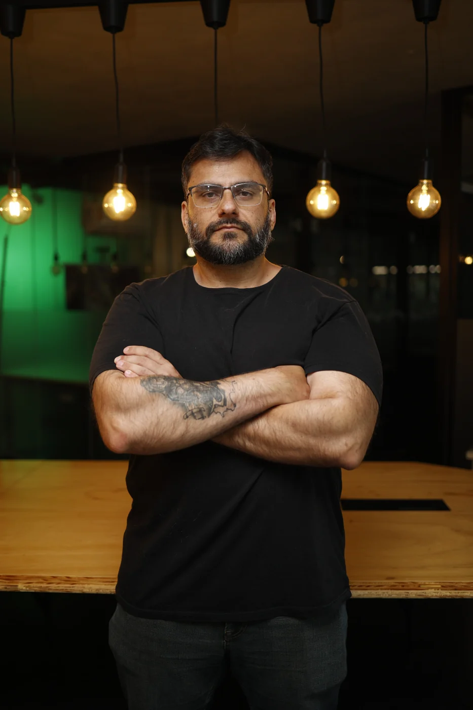

GAME DESIGNER · COMBAT / SYSTEMS / PROGRESSION
Rafael
Tenorio.
Game Designer — Gameplay & Systems
I design and implement combat, character kits, and progression systems—from core gameplay in a shipped 5v5 MOBA to hands-on development of independent roguelites.

Rafael TenorioGame Designer · Brasília, Brazil
Commercial productionCore combat & systems · Mystic Kingdoms
Hands-on developmentUnity / C# · gameplay implementation
Independent projectsRoguelite mechanics, progression & encounters
01 / SELECTED WORK
Projects (05)
Shipped commercial work, independently developed gameplay systems, and award-winning prototypes.
Game Designer
Combat · Systems · Progression
Game Designer experienced in end-to-end gameplay design, implementation, character kits, balance, and progression. I combine hands-on engine work with playtesting and quantitative analysis.
EXPERIENCE
Game Designer / Playgig
JAN 2024 — PRESENT · MYSTIC KINGDOMS
Primary Game Designer for core combat and gameplay systems, including controls, targeting, character kits, progression, and balance. Designed the role-based Gear System, blending MOBA strategy with roguelite buildcrafting.
EDUCATION
MBA, Data Science & Machine Learning
XP EDUCAÇÃO · 2023–2024
Bachelor of Engineering, Mechanical Engineering
UNIVERSIDADE DE BRASÍLIA · 2013–2019